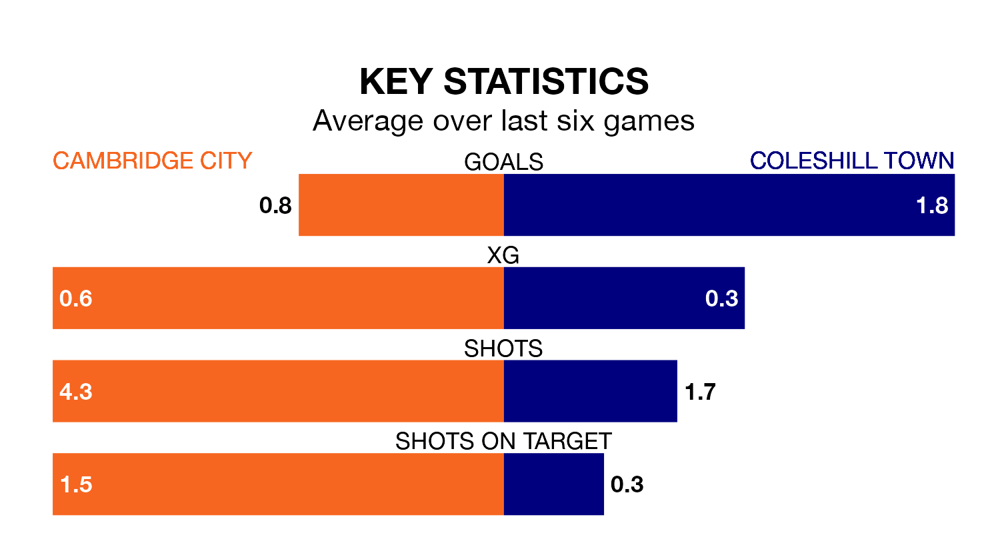

Cambridge City welcome Coleshill Town to ProEdge Westwood Road on Saturday looking to pick up points to end their three-game losing streak.
Cambridge's struggles have left them with five points from their last six Northern Premier League Division One – Midlands matches, while their opponents have earned eight from a possible 18.
Cambridge are 16th in the table after 23 games, of which they have won five and drawn five, earning 20 points.
Coleshill are two places ahead of City in 14th, with eight wins and four draws putting them on 28 points.
With 25 goals in 23 games so far this season, the home side are scoring at below the league average rate with 1.1 goals per game. And they are conceding more than average, letting in 38 goals at a rate of 1.7 per game.
Town, meanwhile, are average scorers, with 1.5 goals per game. They have conceded 2.0 goals per game.
In the last five years, Cambridge and Coleshill have played each other on five occasions. Cambridge won one of them and Coleshill the other.
On average, Cambridge scored 1.8 goals and Coleshill 2.4 in those matches.
Their last meeting was on October 28, when Coleshill won 2-1 at home.
Cambridge's last match was on January 13, a 1-0 loss against Quorn.
Coleshill lost 3-1 against Lye Town last time out, also on January 13.
Updated: 10:02 (UTC), 19/01/24